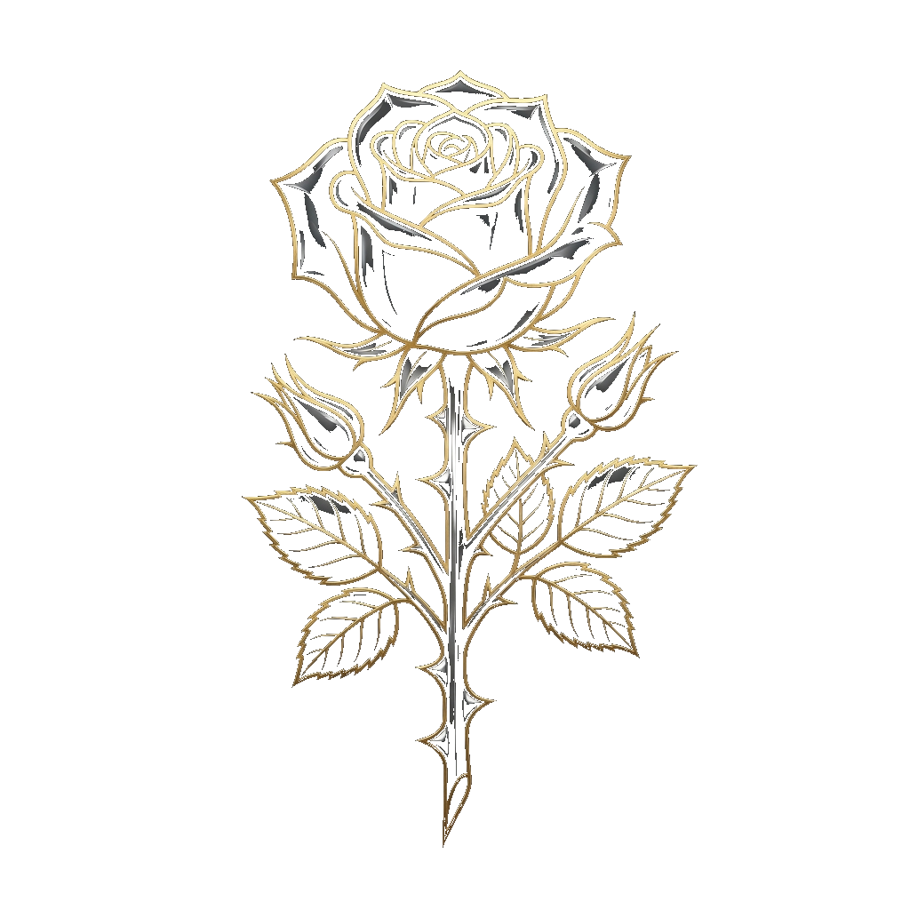
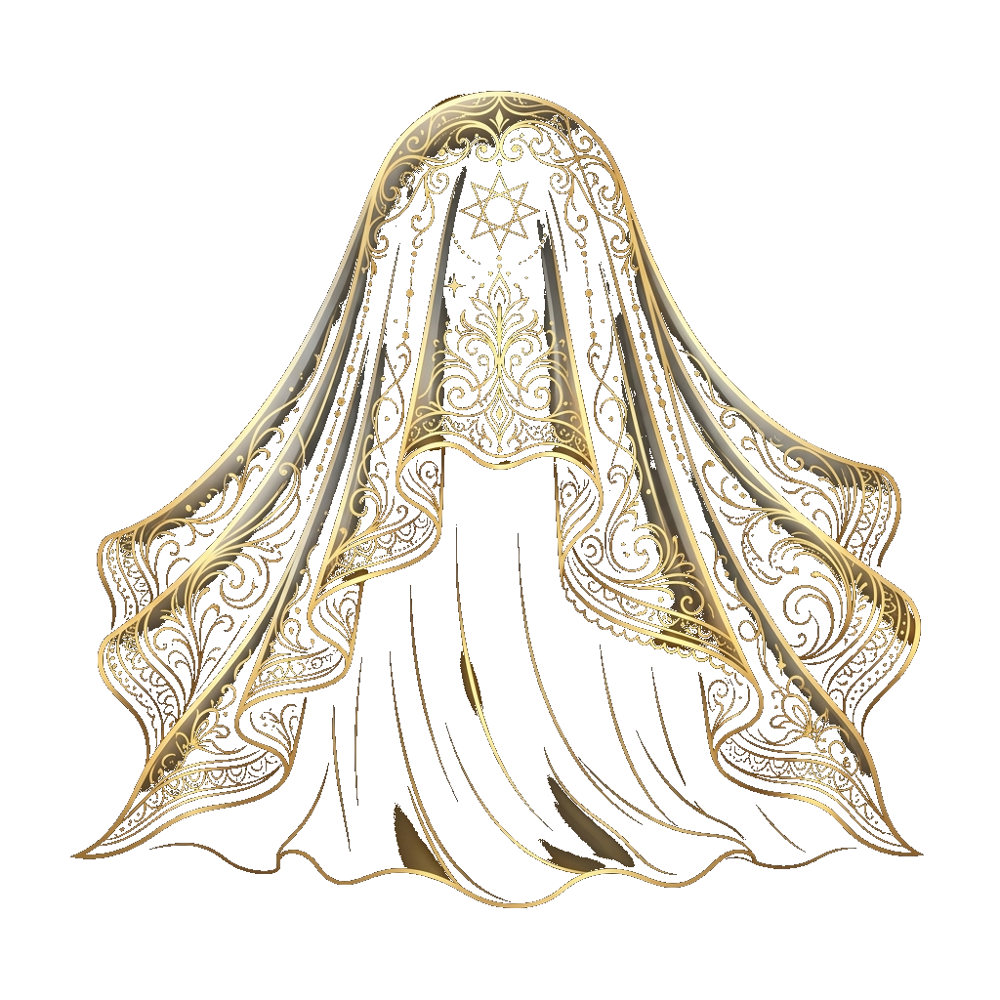
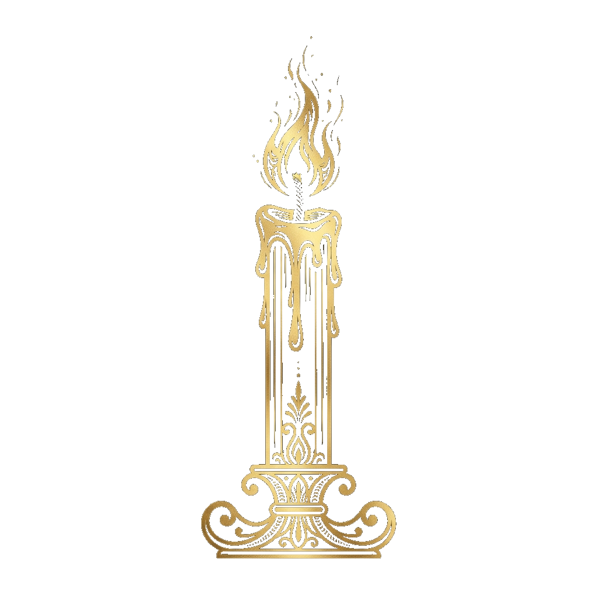
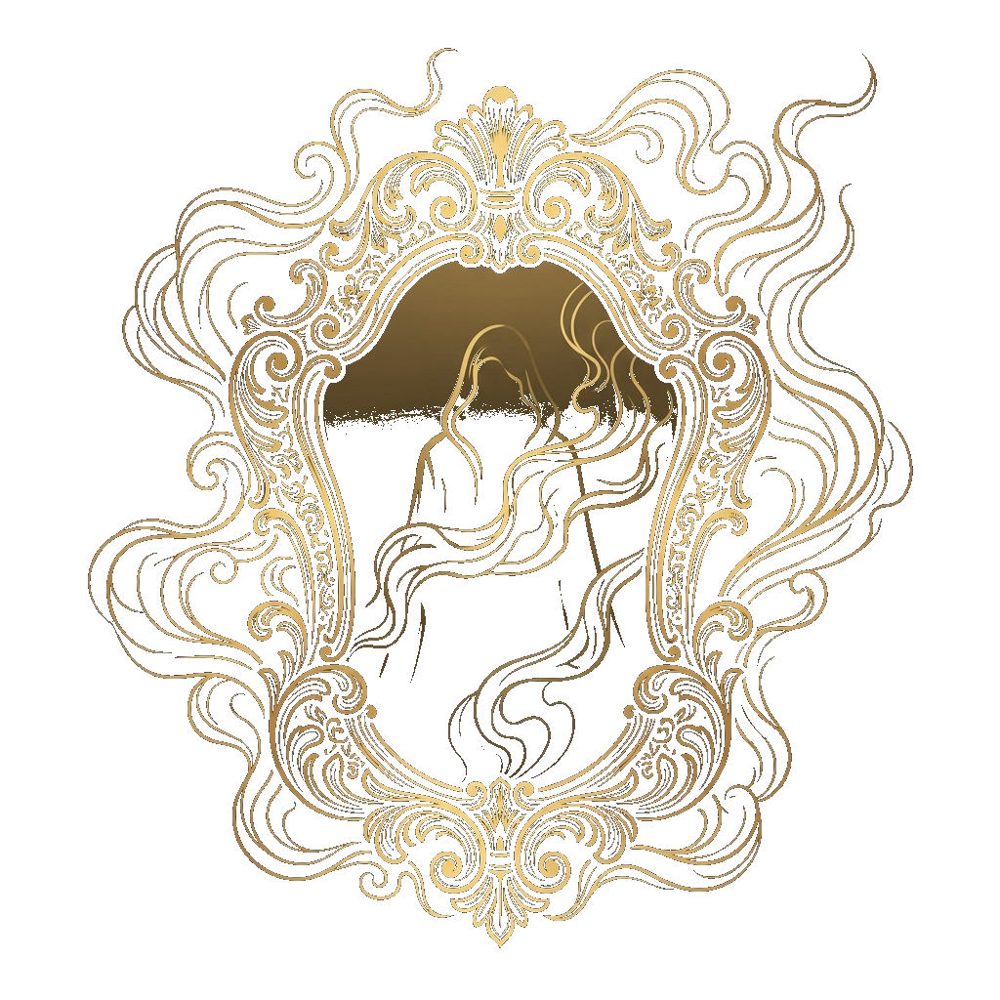
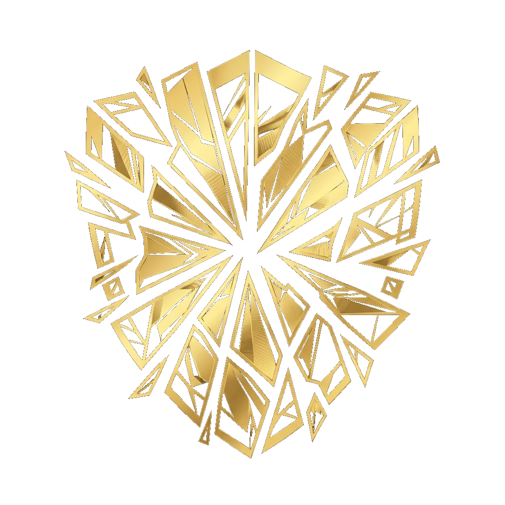
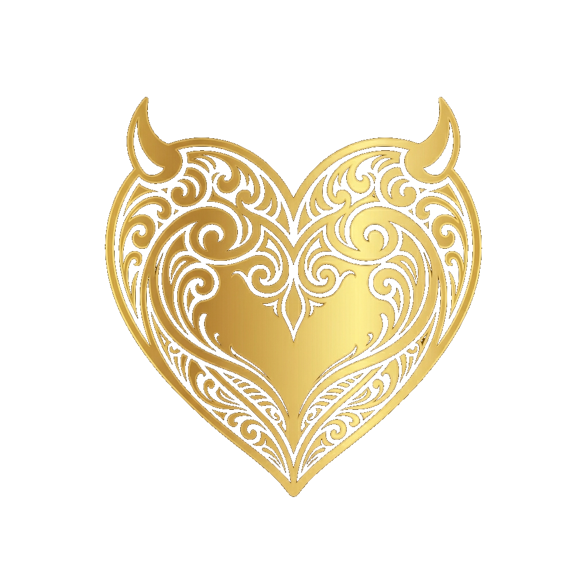
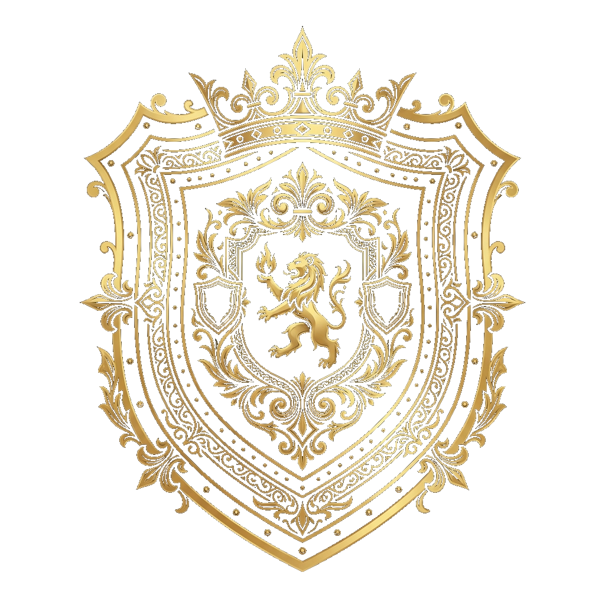

These are not suggestions. They are the foundation upon which this sisterhood stands. Every sister who wears the mark of ΠΘΙ is bound by these decrees — not by force, but by the fire of shared conviction.
ΠΘΙ
"From shadow, we bloom."
FOUNDED OCTOBER 31, 2025
PI THETA IOTA
The Huntress
Founded October 31, 2025
under the divine protection of
Velithra, The Veiled One
The Manifesto
We were not born in the light.
We were shaped in the dark — quiet, watching,
learning the weight of our own silence.
The shadow was never a wound. It was the womb.
Then came the fire.
Not given. Not borrowed. Ignited.
A burning that did not destroy us
but revealed what we had always carried.
We found each other in the glow.
Women who refused to dim,
who built something sacred from the ash —
a sisterhood forged in controlled flame,
bound not by obligation, but by fire chosen.
We are the Huntress. We do not wait. We do not waver.
We walk forward — soft hands, sharp wisdom,
and a flame that answers to no one.
"From flame, we are forged. In fire, we remain."
— The Fire Creed of Pi Theta Iota
About Pi Theta Iota
Pi Theta Iota was founded on October 31, 2025, under the divine protection of Velithra — goddess of love, shadows, and silent justice. What began as a whisper between women who refused to be ordinary became a sisterhood forged in fire and sealed in intention. We did not come together by accident. We were called.
Our letters — ΠΘΙ — are not merely Greek. They are a mark. A signal to those who understand that femininity is not fragile, that elegance carries weight, and that the women who move in silence leave the deepest scars on history. We are known as The Huntress — not for what we chase, but for what we choose to protect.
Shadow is where we were born. Moonlight is what guided us. Fire is what we became. The darkness that sheltered us in the beginning was never weakness — it was incubation. The moonlight that found us there was never an accident — it was destiny. And what emerged from that stillness, illuminated and ablaze, is something that cannot be dimmed, diluted, or undone.
Our Mission
Pi Theta Iota exists to cultivate a sisterhood rooted in divine feminine power, leadership, resilience, and legacy. We are committed to uplifting one another through unity, discipline, creativity, and strength. Our organization empowers women to lead with courage, protect what we build, and grow spiritually, mentally, and collectively. Through symbolism, sacred intention, and unbreakable bonds, we stand as protectors of our vision and architects of our future.
Identity
LettersΠΘΙ
NicknameThe Huntress
ColorsCrimson, Bright Peach, Soft Ivory, Cocoa Brown, Warm Gold
ElementFire, Shadow & Moonlight
FlowerBlack Star Gladiolus
StonesGarnet, Black Obsidian, Red Jasper
Sacred AnimalThe Seraphye — Black Swan
FoundedOctober 31, 2025
"From shadow, we bloom."— Legacy Motto of ΠΘΙ
The Goddess Velithra
veh-LITH-ruh — The Veiled One
Domain
Goddess of Love, Shadows, and Silent Justice. Velithra rules the twilight hour — that trembling edge where love and vengeance meet and cannot be told apart. She is the restraint before the reckoning. The pause before the blade. Her dominion is not chaos; it is the controlled burn. Every flame she carries was once a wound she chose to transfigure into power. She does not destroy carelessly. She destroys with precision, with grace, and only what deserves to fall.
Appearance
Hair like dark silk threaded with starlight — as though the night itself chose to pour down her shoulders. Her eyes shift between blush and violet depending on her temperament: soft when she offers mercy, deep and unreadable when mercy has expired. She moves the way candlelight moves — present everywhere, belonging to no one, impossible to hold.
Personality
Velithra does not raise her voice. She has never needed to. There is a fire that lives inside her calm — a heat so steady it bends the air around her without a single visible flame. She loves deeply and without apology. She protects silently and without warning. She forgives once. Those who mistake her softness for absence learn, eventually, that stillness is where her power is most concentrated.
Origin
When Aphrodite tried to erase the memory of mortal love — to sever the thread between divine desire and human devotion — something was left behind. The leftover pieces of heartbreak, moonlight, and longing that even a goddess could not destroy gathered in the space between worlds. From that residue, Velithra was born. Not created. Not summoned. Assembled from everything love tried to forget. She is the evidence that what is felt deeply enough cannot be unmade.
Sacred Offerings
Black roses laid without explanation. Moonlit baths taken in silence. Whispered confessions spoken to no one and meant for her alone. Mirrors placed facing the night sky — so she may see herself in those who carry her flame. These are not rituals of worship. They are acts of recognition. Velithra is not prayed to. She is embodied.
Connection to Sisters
Velithra is not above us. She moves through us. Every sister who has loved without flinching, who has held her ground when the world demanded she shrink, who has turned her scars into sovereignty — she is carrying Velithra's fire whether she knows it or not. We do not worship her. We become her. Every act of silent strength, every moment of deliberate grace under pressure, is Velithra breathing through us.
"I was not born from love. I was born from what love left behind — and I made it sharper."— Voice of Velithra
Sacred Symbols & Iconography
Nine symbols define the language of ΠΘΙ. Each one carries a truth that words alone cannot hold — pressed into glass, etched into silver, reflected in smoke. They are not decoration. They are doctrine.

The Black Glass Rose
Love that draws blood.
Beautiful and impossible to hold without consequence. The Black Glass Rose represents the kind of love ΠΘΙ sisters carry — deep, deliberate, and never without edge. It does not apologize for the cut. It reminds you that anything worth holding will demand something from your hands.

The Silver Veil
What is sacred stays hidden until it chooses to be seen.
The Silver Veil is secrecy as protection, not deception. It is the understanding that not everything belongs to the world. Some truths are kept not because they are shameful, but because they are too powerful to be handed to those who have not earned them.

The Fading Candle
Desire and vengeance share the same flame.
The most sacred of our fire symbols. The Fading Candle teaches that passion and justice burn from the same wick — one does not exist without the other. As the flame lowers, it does not weaken. It concentrates. The final inch of fire is always the hottest. This is where we live.
The Seraphye
Transformation made flesh. Shadow given wings.
The Black Swan of ΠΘΙ — elegant, ominous, untouchable. The Seraphye represents the woman who has passed through pain and emerged not broken but transfigured. She does not fly from the fire. She carries it in the darkness of her wings, silent and absolute.

Mirror Kissed by Smoke
The truth you see when the illusion clears.
A mirror obscured by smoke reveals only what is real once the air settles. This symbol speaks to temptation and truth — the understanding that desire can cloud vision, but clarity always returns for those patient enough to wait. ΠΘΙ sisters learn to see through the smoke, not avoid it.

Broken Mirror Shards
Every fracture becomes armor.
Where others see destruction, we see material. Broken Mirror Shards represent the lessons extracted from pain — sharp, reflective, and repurposed. A sister of ΠΘΙ does not mourn what shattered. She picks up the pieces and lines her shield with them.

The Horned Heart
The only heart worth carrying is one that has survived.
A heart with devil horns — love that lived, learned, and refuses to fall. The Horned Heart is defiant, not defeated. It belongs to the woman who loved fully, lost completely, and came back sharper. She does not hide her scars or her edge. She wears them like a crown. This is the heartbeat of ΠΘΙ — fierce, unbroken, and unapologetically still beating.

The Black Shield
Protection is not passive. It is a position.
The Black Shield is raised deliberately. It represents the active choice to guard what matters — your sisters, your peace, your sacred space. ΠΘΙ does not wait for threats to arrive. The shield is always held. The stance is always ready. Protection here is not reaction. It is discipline.
The Silver Crown
Divinity earned, not inherited.
The Silver Crown is not given. It is recognized. It represents the divine authority that comes from walking through fire, holding your sisters close, and leading without demanding to be followed. Leadership in ΠΘΙ is quiet, certain, and unmistakable — a crown that never needs to announce itself.
Element: Fire, Shadow & Moonlight
Three elements live together in every sister of ΠΘΙ. Shadow is the origin — the dark, quiet womb where we were shaped before the world ever knew our names. Moonlight is the guidance — the silver thread that led us through the darkness, illuminating the path without burning it away. And Fire is the transformation — the moment we chose to stop hiding what we carried and let it blaze.
Shadow taught us to move in silence. Moonlight taught us to see without being seen. Fire taught us to become impossible to ignore. These three are not separate forces — they are one identity. The shadow is where we were born, the moonlight is what guided us forward, and the fire is what we became. Together, they are the elemental truth of ΠΘΙ: sacred, intentional, and carried with the understanding that women who hold all three elements do not merely survive — they transform everything they touch.
The Five Principles of Fire
Rebirth
We are not who we were. We burned that away. Every sister who enters ΠΘΙ surrenders the version of herself that was shaped by fear, expectation, and compromise. What rises from that surrender is not a new woman — it is the real one, finally unobstructed. Rebirth is not death. It is the fire clearing everything that was never truly yours.
Power
The flame does not ask permission. It does not wait for approval. It does not shrink to make the room more comfortable. Power, as we carry it, is not volume — it is temperature. The woman who walks into a room and shifts the air without speaking a word understands this principle. ΠΘΙ power is felt before it is seen.
Transformation
What the fire touches, it changes forever. There is no returning to what you were before the flame. This is not loss — this is evolution. Every trial, every heartbreak, every betrayal that should have broken you instead became fuel. Transformation is the fire's gift to those who refuse to be consumed by it.
Controlled Destruction
We choose what burns. Not everything deserves to be preserved. Controlled destruction is the discipline to identify what no longer serves — habits, relationships, patterns, versions of yourself that have outlived their purpose — and to release them deliberately into flame. ΠΘΙ does not burn recklessly. We burn with intention, and we leave nothing behind that we did not mean to lose.
Inner Flame
The fire you cannot see is the one that keeps you alive. Every sister carries a flame that no storm, no betrayal, no season of silence can extinguish. It is the conviction that lives beneath composure. The certainty that burns behind still eyes. The inner flame is ΠΘΙ's most sacred fire — the one that was never given to you, because it was always yours.
"From flame, we are forged. In fire, we remain."
— The Fire Creed of ΠΘΙ
Core Values
"She who knows herself cannot be undone."
— Voice of Velithra
Duality
Embrace both light and shadow — they were never at war.
A Huntress does not choose between her softness and her steel. She carries both, deliberately. The fire that forged her did not burn away her tenderness — it tempered it. She is gentle when she means it, ruthless when she must be, and never ashamed of either. Duality is not contradiction. It is completeness.
Protection
Guard your peace, your sisters, your truth.
What we build, we defend. Not with noise, not with spectacle — with presence. A Huntress stands between her sisters and whatever threatens the flame. She protects reputation, energy, sacred space, and the bonds that hold this sorority together. The shield is quiet. The shield is constant. And it never drops.
Temptation
Own your allure, your mystery, your divine presence.
There is power in being wanted and wisdom in being unreachable. A Huntress moves through the world with an energy that draws people in — not because she performs, but because she is unafraid to be magnetic. Temptation is not manipulation. It is the fire made visible. The warmth that pulls others closer while she decides who stays.
Love
Lead with compassion, even when it burns.
Love in this sisterhood is not passive. It corrects. It challenges. It holds a mirror up when the reflection is uncomfortable. A Huntress loves fiercely enough to be honest, patient enough to wait for growth, and strong enough to carry her sisters without keeping score. This love is the core of the flame — the heat that sustains, not destroys.
Revenge
Seek justice with elegance, never chaos.
A Huntress does not forget. But she does not spiral. When wronged, she responds with precision — measured, intentional, devastating in its composure. Revenge is not rage. It is the controlled burn: clearing what no longer serves, leaving nothing but ash where betrayal stood. She does not lower herself to the level of what hurt her. She rises, and that is the answer.
Power
Walk unbothered, unshaken, unforgettable.
Power is not volume. It is the silence that commands a room. A Huntress carries herself as though the ground beneath her is hers — because it is. She does not compete for attention; she occupies space with such certainty that the world adjusts. Power is the final value because it is the sum of all the others: duality mastered, protection enforced, temptation owned, love given freely, justice delivered. She walks in fire and does not flinch.
Color System
Every color in Pi Theta Iota carries meaning. Nothing is decorative. Nothing is accidental. These five colors are the visual language of the sisterhood — worn, displayed, and honored.
Crimson
#8A1E2D
Sacred fire. The power that guards.
Bright Peach
#FFB3A7
Divine softness. The voice that heals.
Soft Ivory
#FFF4EC
Clarity. The truth beneath.
Cocoa Brown
#4A2A2A
Grounding. The earth that holds.
Warm Gold
#D6B26A
Divinity. The crown we carry.
Pairing Rules
Black + Warm Gold — Primary pairing. Headers, titles, section breaks.
Black + Crimson — Fire and ceremonial sections only.
Cocoa + Ivory — Grounded, earthy sections.
Peach + Gold — Sacred quotes. Velithra's voice.
Sacred Stones
"What the earth remembers, the body carries."
— Voice of Velithra
Three stones anchor the Huntress to her power. Each one was chosen for what it holds — not beauty, but meaning. They are the earth's memory of fire.
Garnet
Passion · Life Force · Devotion
Garnet is the stone of the inner flame — the pulse beneath composure, the devotion that does not waver. It is tied to Love, the value that burns hottest without consuming. A Huntress who carries garnet carries proof that tenderness and fire are the same thing. It reminds her: devotion is not weakness. It is the most controlled burn of all.
Black Obsidian
Protection · Truth · Grounding
Born from volcanic fire and cooled into darkness, obsidian is the stone of controlled destruction. It absorbs what should not reach you and reflects what needs to be seen. Tied to Protection, it is the Huntress at her most vigilant — shielding the sisterhood from what corrodes. Black obsidian does not lie. It shows the truth, even when the truth is sharp.
Red Jasper
Endurance · Stability · Strength
Red jasper is the slow fire — the kind that does not flare and fade but holds steady through everything. It is tied to Power and Transformation, the values that demand a woman who does not break under pressure. Red jasper is the stone of the Huntress who has been tested, bent, refined — and emerged harder. It is endurance made mineral. Strength made permanent.
The Seraphye
ALSO KNOWN AS: NYXARA, THE BLACK SWAN
She does not announce herself. She arrives — and the room changes temperature.
The Seraphye is the guardian spirit of Pi Theta Iota: a black swan moving through flame, untouched. She is not celestial. She is not soft. She is elegant in the way that something dangerous can be elegant — precise, deliberate, impossible to look away from. Shadow made physical. Fire made graceful.
She emerged from the same forge that shaped the sisterhood. Where others burned away, she condensed — darker, denser, more herself. She carries the flame not as a torch but as a presence. You do not see her burn. You feel the heat when she passes.
She is what every Huntress aspires to become: ominous enough to ward off what threatens the sacred, beautiful enough to remind the sisterhood what they protect.
What She Represents
Transformation
She emerged from fire more powerful than what entered it. The Seraphye is proof that destruction is not the end — it is the prerequisite.
Loyalty
Her devotion to the sisterhood was forged in flame, not circumstance. She does not guard out of obligation. She guards because she chose the fire and everything it protects.
Grace
She moves through fire without burning. Not because she is immune, but because she has mastered herself so completely that even the flame bends around her.
Protection
She is the guardian of the sacred flame — the living perimeter between the sisterhood and what would extinguish it. Nothing passes her without permission.
Duality
Darkness and fire in one form. She is the proof that opposites do not cancel each other — they complete. The black swan does not choose between shadow and flame. She is both, always.
"She was not sent to comfort you. She was sent to remind you what you are."
— On the Seraphye
CODE OF CONDUCT
"Order is not obedience. It is the architecture of trust."
— The Veiled Council
Communication is KEY
Communicate effectively with your sisters. Open, honest communication prevents misunderstandings and strengthens our bonds.
Respect Your Sisters
As sisters, we need to respect each other. Be mindful of how you speak to your sisters. Zero disrespect will be tolerated.
No Intra-Sorority Dating
No dating one another unless the relationship was established before joining. If you were already together, that’s acceptable. While in the sorority, new romantic relationships between members are absolutely not permitted.
Honesty & Trust
Always be honest and uphold that trust. Our sisterhood is built on mutual trust and integrity.
Kindness & Inclusivity
Encourage kindness and inclusivity among one another. Every sister deserves to feel welcomed and valued.
Support Each Other
Support each other’s growth in Second Life and real life, and prioritize well-being. We lift each other up.
No Dating Related Organizations
No dating future brother/sister organization members or relations tied to fellow sorority sisters. This maintains appropriate boundaries.
Respect Privacy
Respect each other’s privacy. DO NOT SHARE EACH OTHER’S PERSONAL INFORMATION WITHOUT CONSENT. This is a serious violation of trust.
Confidentiality
KEEP ALL SORORITY BUSINESS CONFIDENTIAL regarding all sorority matters and discussions. What happens in ΠΘΙ stays in ΠΘΙ.
Leadership & Promotion
We promote internally and externally. Leadership roles are to be taken seriously. Under promotion, they are earned, not given.
No Over-Sexualization
Do NOT over-sexualize the sorority! We represent divine femininity with class and respect.
No Adoption Within Sorority
No adopting within the sorority. We are all equals as sisters.
ORGANIZATIONAL STRUCTURE
"A flame without structure is just destruction. We are deliberate."
— The Veiled Council
Pi Theta Iota operates through a tiered council system — four circles of responsibility, each with its own mandate. Authority flows from the top, but purpose flows through every tier.
The Veiled Council
Head Founder · Co-Founder · President
The Heartkeepers
Vice President · Dean of Pledges · Pledge Master · Secretary
The Dreamwalkers
Event Coordinator · Fashion Maven
Daughters of the Veil
All ΠΘΙ sisters united in shadow and bloom
Roles & Responsibilities
Head Founder
Sugg / Silent Flame
The origin and final authority. The Head Founder carries the vision from which all of ΠΘΙ was born — shaping its direction, protecting its identity, and holding the flame that started it all.
Co-Founder
To be appointed
Shares the founding vision and stands alongside the Head Founder in all matters of legacy and long-term direction. A mirror of the original flame.
President
To be appointed
The operational leader. The President oversees daily governance, manages internal affairs, and serves as the primary voice of the sisterhood in all formal matters.
Vice President
To be appointed
Second in command. Supports the President in all operational duties and assumes leadership in their absence. The steady hand when the flame flickers.
Secretary
To be appointed
The keeper of records. Documents meetings, tracks attendance, manages communications, and ensures nothing spoken in council is lost to time.
Dean of Pledges
To be appointed
Oversees the pledge process from first contact to full initiation. Responsible for evaluating potential sisters and ensuring every new member understands the weight of the veil they are stepping behind.
Pledge Master
To be appointed
Works directly with pledges during their trial period. Guides, tests, and mentors — shaping raw potential into sisters who are ready to carry the flame.
Fashion Maven
To be appointed
Curates the visual identity of ΠΘΙ across all public-facing moments. From rep day aesthetics to event styling, the Maven ensures the sisterhood looks as powerful as it is.
Event Coordinator
To be appointed
Plans, organizes, and executes all sorority events — from philanthropic campaigns to sisterhood gatherings. Every event reflects the standard of ΠΘΙ.
MEMBERSHIP EXPECTATIONS
"To wear the mark is to carry the standard."
— ΠΘΙ Doctrine
Membership in Pi Theta Iota is a commitment, not a title. The following expectations apply to every active sister without exception.
Monthly Dues
- • 2,000L$ per month, due on the 1st
- • 7-day grace period granted
- • If unable to pay on time, communicate before the deadline — silence is not an option
Mandatory Meetings
- • Every Sunday, attendance required
- • Absence without prior notice is noted and addressed
Rep Days & Huntress Friday
- • Huntress Friday — rep days are every other Friday
- • Must be posted to the page for a minimum of 24 hours
- • Formal fashion standards — incorporate ΠΘΙ symbols and sorority colors
Event Attendance
- • Attendance at all sorority-hosted events is mandatory
- • Philanthropic campaigns and collaborative events included
- • Participation reflects commitment — not attendance alone
Huntress of the Month
- • Monthly recognition awarded to the sister who best exemplifies ΠΘΙ values
- • Based on engagement, representation, attitude, and contribution
- • This is earned through action, not popularity
Philanthropy
We do not simply speak of protection — we move toward it. Each month, the Huntress turns her gaze outward, carrying our fire to the causes that demand it. These are not obligations. They are extensions of who we are.
APRIL
RAINN
The nation’s largest anti-sexual violence organization. We stand with survivors because protection is not passive — it is a practice. Every voice believed is a wound answered.
JUNE
The Trevor Project
Crisis support and suicide prevention for LGBTQ+ youth. No child should carry their fire alone. We show up so the next generation knows they are not invisible — they are infinite.
SEPTEMBER
Sickle Cell Disease Foundation of California
Advocacy and support for those living with sickle cell disease. Resilience is not just our principle — it is their daily reality. We honor that endurance with action.
OCTOBER — WEEK 2
Pregnancy & Infant Loss Awareness
A grief carried in silence by too many. We hold space for the mothers and families who mourn what the world never met. Their love is not lesser for its brevity.
OCTOBER — ONGOING
National Breast Cancer Foundation
Early detection, education, and support for women facing breast cancer. The Huntress does not look away from what is difficult. We face it — together, relentlessly, with resources in hand.
DECEMBER
Make-A-Wish Foundation
Granting wishes for children with critical illnesses. In the darkest seasons, we become the light someone else needs. A wish fulfilled is a flame passed forward.
Traditions & Rituals
A sisterhood without ritual is just a list of names. What we build here is older than us — it is the muscle memory of devotion, repeated until it becomes sacred. These are the fires we tend.
Huntress Friday
Every other Friday, we wear the mark. Rep day is not vanity — it is visibility. A declaration that the Huntress walks among them. When a sister puts on her letters, she carries every woman who ever wore them before her. Posted to the page for 24 hours minimum — formal fashion, sorority symbols front and center.
Huntress of the Month
Each month, one sister is recognized — not for perfection, but for fire. The woman who showed up hardest, gave the most of herself, and kept the flame bright when it would have been easier to let it dim. She is celebrated because excellence, witnessed, becomes contagious.
Annual Philanthropic Events
Once a year, the sisterhood gathers its full force behind a cause greater than itself. These events are not performances — they are proof that our fire reaches beyond our own circle. The Huntress does not hoard her warmth.
Sisterhood Rituals
There are things known only to those who have walked through the flame of initiation. Our rituals are sacred, confidential, and revealed only to the initiated. They are the heartbeat beneath the surface — the private fire that binds us beyond what any outsider could name.
“What is revealed in flame stays in flame.”
— Sacred Law of Pi Theta Iota
Guiding Principles
“In every heart lies both light and shadow — I am the balance between them. Love fiercely, dream deeply, protect what is yours, and let no wound go unanswered. Beauty is my weapon, mercy my veil, and vengeance my quiet devotion.”
— Voice of Velithra
“She does not choose the light over the dark. She carries both — and neither consumes her.”
I. We Walk in Beauty and Shadow
A Huntress does not deny her darkness to prove her worth. She walks with it — steadily, deliberately, like a woman who has learned that the flame casts both light and shadow, and she is the source of each. Our beauty is not the absence of pain. It is what remains after the fire has passed through us and found nothing it could destroy.
“Touch her gently, or learn why the fire learned her name.”
II. Soft But Untouchable
Softness is not surrender. We are gentle because we choose to be, not because we must be. The Huntress moves through the world with open hands and a steady gaze — but beneath the silk is something forged in fire that does not bend for those who mistake kindness for weakness. We are soft because we can afford to be. We are untouchable because we have earned it.
“They will try to make your beauty small. Let it burn.”
III. Beauty Is Our Rebellion
In a world that weaponizes a woman’s appearance against her, we reclaim it as our own. Our beauty is not decoration — it is defiance. It is the fire we wear on the outside, daring anyone to underestimate what it protects. The Huntress adorns herself not for approval, but as an act of power. Every lipstick, every heel, every deliberate choice of how we present ourselves is a quiet revolution.
“The loudest room still fears the woman who says nothing.”
IV. Silence Is Our Power
We do not announce our plans. We do not argue with those who cannot hear us. The Huntress understands that silence is not emptiness — it is strategy. It is the held breath before the fire moves. Our silence is not absence. It is presence so controlled, so deliberate, that when we finally speak, the room has no choice but to listen.
“She rises — not for herself alone, but for every sister who ever knelt.”
V. To Love Is to Protect. To Protect Is to Rise Radiant.
This is the final principle because it is the one that holds every other. Love without protection is fragile. Protection without love is cold. But together — together they are the fire itself. A Huntress loves fiercely enough to stand between her sisters and anything that threatens them. And in that act of devotion, she does not diminish. She rises — radiant, unbreakable, aflame with purpose.
“From shadow, we bloom.”
— Legacy Motto of Pi Theta Iota
“From flame, we are forged. In fire, we remain.”
— The Fire Creed
You were born to run the world
with soft hands and sharp wisdom.
Your beauty is not your weakness — it is your weapon,
tempered in a fire that only you survived.
Your silence is not empty — it is your strategy,
the held breath before the flame decides where to land.
You do not ask for permission to burn.
You never did.
We are here to protect each other,
to love loudly and without apology,
to move like goddesses through a world
that never saw us coming —
and still won’t see us leave.
No matter where life carries you —
your shadow, your strength, your fire,
and your sisterhood remain.
They cannot be taken. They cannot be dimmed.
They were forged, and what is forged endures.
WE ARE ΠΘΙ.
WE RISE. WE GUARD. WE BLOOM.
FOUNDED OCTOBER 31, 2025
BY SUGG / SILENT FLAME
Brand Elevation — Next Steps
- Custom black swan SVG icon set for social media avatars and Discord
- Animated cover version (CSS keyframes) for Discord server banner
- Pledge invitation template using the same design system
- Rep day photo frame overlay using the color palette
- Ceremonial script template for initiations using the sacred quote treatment